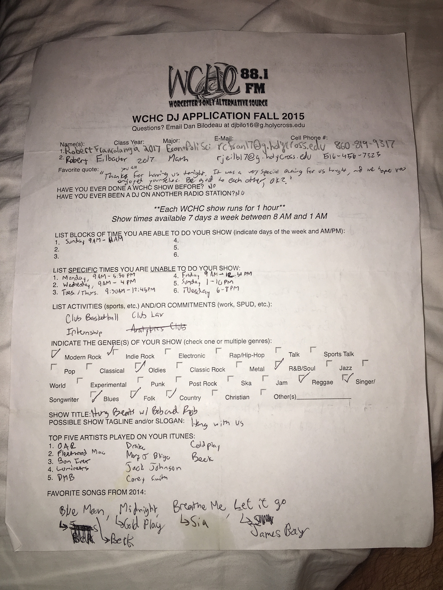
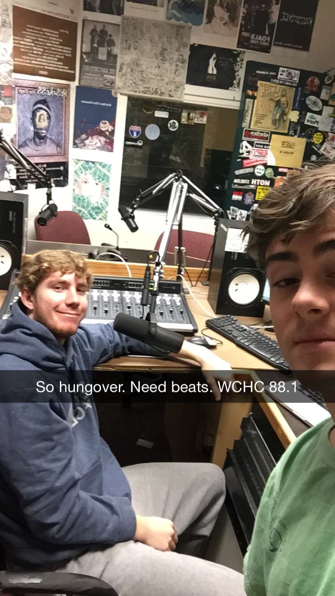
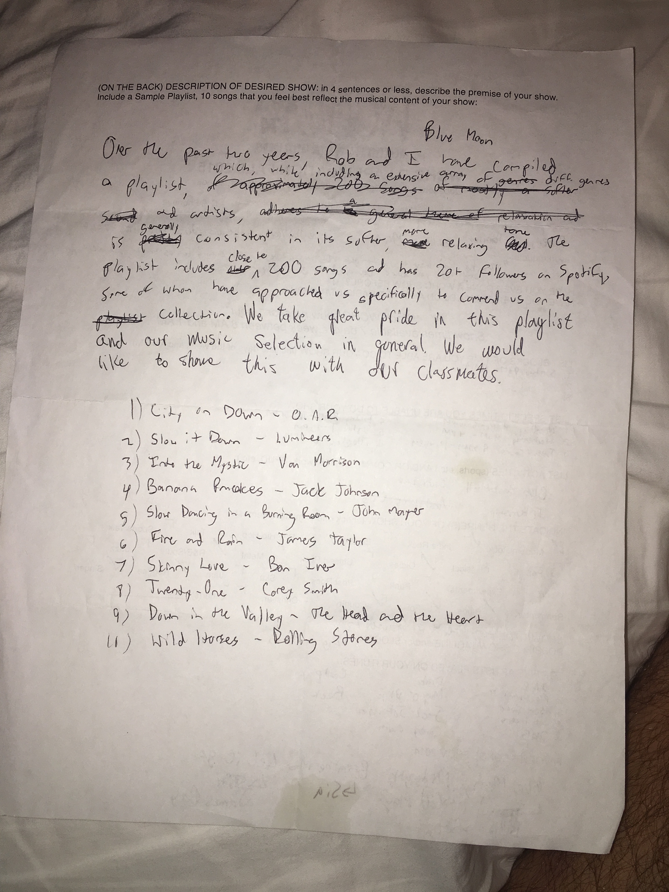

Hung as in hungover
Hung Beats was created by Bobby (Eilbacher) and Robby (Francalangia), however both of them have since dropped the "y". For years the idea lived on Spotify and permeated the airways of Worcester MA from Holy Cross's radio station: WCHC 88.1. Now that we are older and have much more serious boughts with hangovers and scaries the need for hung beats has only increased. Below you can find the application WCHC made us throw together to earn the coveted Sunday 10AM spot and the creators themselves serving the Holy Cross and Worcester community by providing the beats that heal us all on those tough mornings.
  